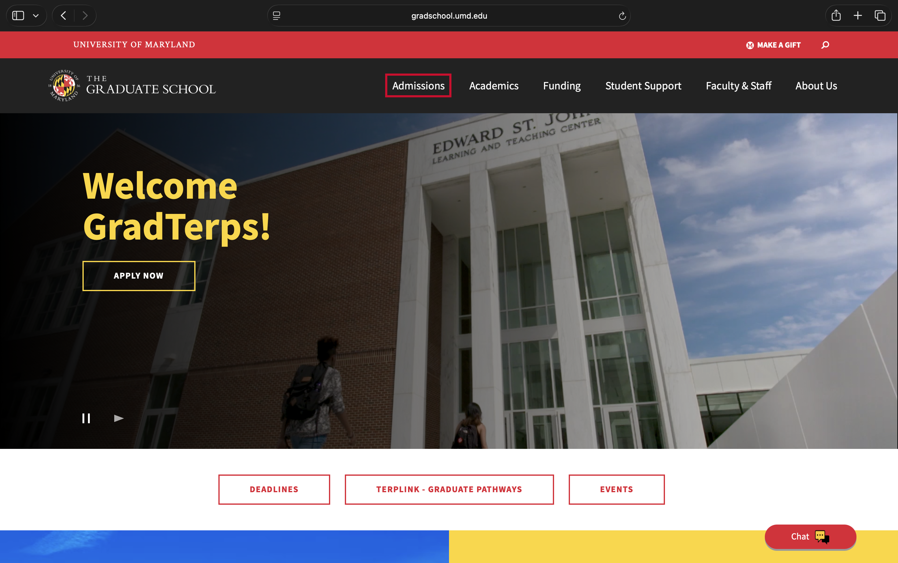
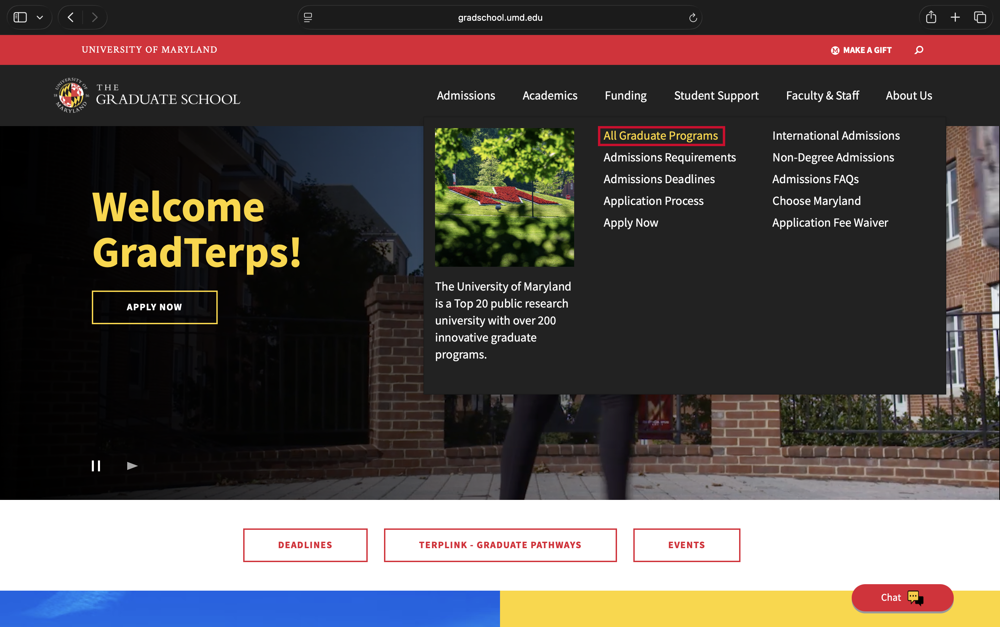
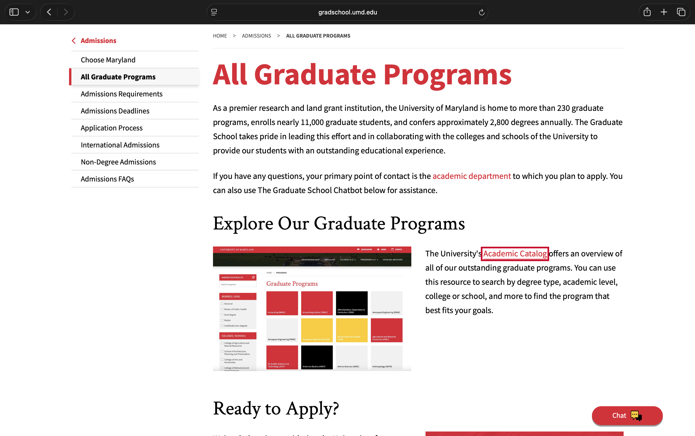
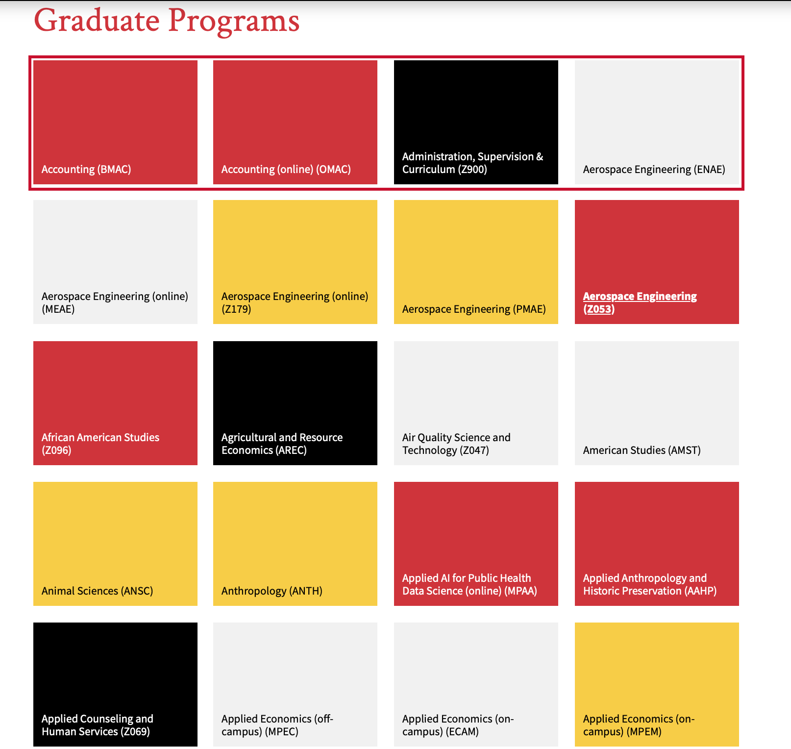
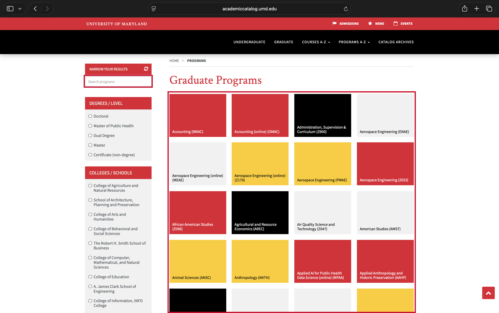
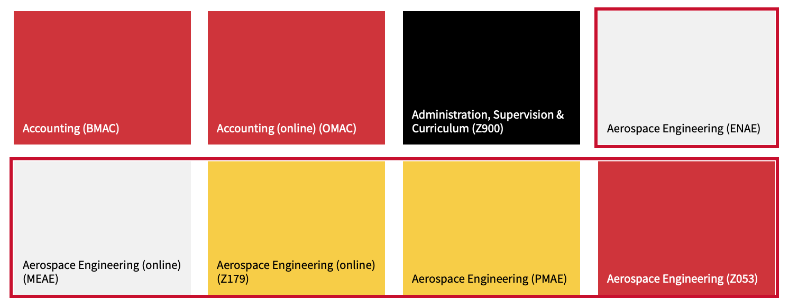
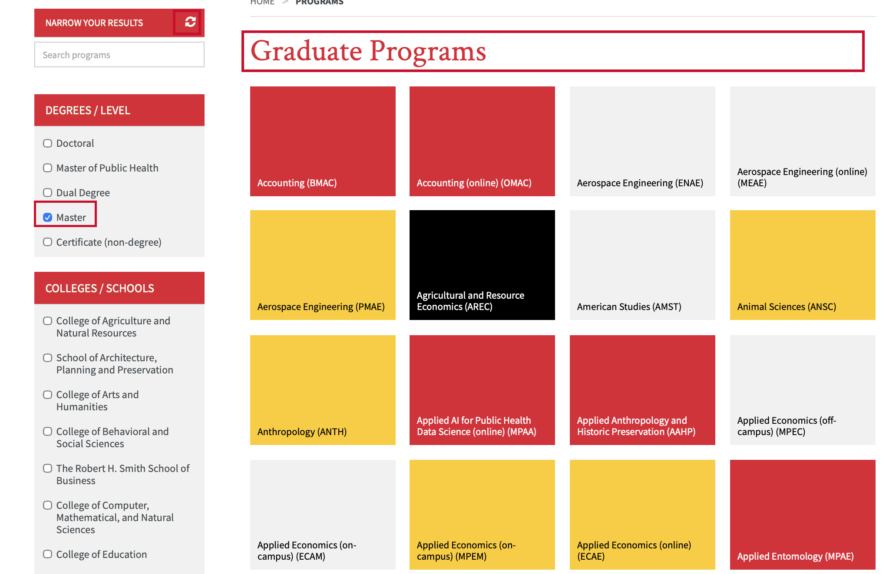
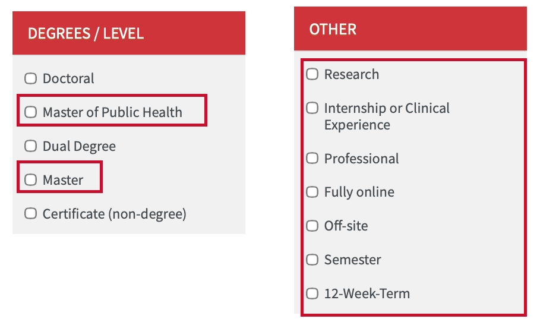
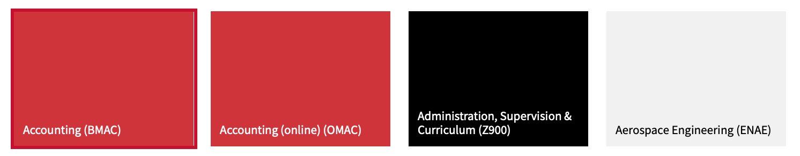

Heuristics covered1. Aesthetic and minimalist design 2. Flexibility and efficiency of use 3. Match between system and the real world 4. Visibility of system status 5. Consistency and standards 6. Recognition rather than recall 7. Help and documentation
Red box: what to click, or the problemDashed yellow box: the proposed change
The flow

1On the Graduate School home page, open the Admissions menu.

2In the menu, click All Graduate Programs.

3On the All Graduate Programs page, click the Academic Catalog link.
4The Academic Catalog program list opens. This is the page evaluated below.
Heuristic 1
Aesthetic and minimalist design
ProblemToo many boxes and colored labels.
DescriptionThe page feels cluttered. Red, yellow, black and grey tiles look like categories but mean nothing, and the program names are small. This makes it hard to spot important information and scan programs.
Current site

Proposed wireframe
UNIVERSITY OF MARYLAND · ACADEMIC CATALOG
Graduate Programs
Simple list instead of colored tiles
Accounting
Robert H. Smith School of Business
Program details
Aerospace Engineering
A. James Clark School of Engineering
Program details
African American Studies
College of Arts and Humanities
Program details
Heuristic 2
Flexibility and efficiency of use
ProblemToo many navigation steps and a long program list without clear grouping.
DescriptionUsers must click through several screens to reach the program list. Once there, 230+ programs appear in one long alphabetical grid. The "Narrow your results" search box is small, pale and tucked into the sidebar, so it is easy to miss. A direct "Explore Graduate Programs" link and grouping programs by field of study would make this easier.
Current site

Proposed wireframe
Welcome GradTerps!
Direct link from the home pageExplore Graduate Programs
Graduate Programs
Large search bar + browse by field of study
Search programs by name or interest
Search
Browse by field:BusinessEngineeringHealthEducationArts & Humanities
Heuristic 3
Match between system and the real world
ProblemSimilar programs are only told apart by internal codes.
Description"Aerospace Engineering" appears five times, with codes such as MEAE, Z179 and PMAE as the only difference. Applicants don't know these codes, so they can't tell which is a master's, a doctorate or an online option. The codes should move to each program's Details page, because applicants comparing programs on this page don't need them.
Current site

Proposed wireframe
Graduate Programs
One heading per program; open it to see each degree, format and deadline, with an arrow to apply
Aerospace Engineering
A. James Clark School of Engineering
Program details|Contact the department
M.S.
FormatIn person
Deadline[date]for Fall 2027
→
M.S.
FormatOnline
Deadline[date]for Fall 2027
→
Ph.D.
FormatIn person
Deadline[date]for Fall 2027
→
Accounting
Robert H. Smith School of Business
open the program · close it · → apply to that degree. "Program details" is one page for the whole program; each degree has its own application, so the → sits on each row. Catalog codes (like ENAE) move to each program's Details page. Brackets are placeholders.
Heuristic 4
Visibility of system status
ProblemWeak feedback after choosing a filter.
DescriptionAfter selecting "Master," the list of tiles gets shorter, but nothing tells the user how many programs now match or which filters are on. Because the tiles all look alike, the change is easy to miss. Resetting uses a small unlabeled icon.
Current site

Proposed wireframe
Graduate Programs
Result count, active filter and clear option
Showing [N] programsMaster's ✕Clear all filters
Accounting
Robert H. Smith School of Business
Aerospace Engineering
A. James Clark School of Engineering
[N] is a placeholder for the live result count.
Heuristic 5
Consistency and standards
ProblemFilter options are grouped inconsistently.
Description"Master of Public Health" sits next to "Master," even though it is a kind of master's degree. The "Other" group mixes unrelated things: program type (Research), location (Off-site) and calendar (12-Week-Term).
Current site

Proposed wireframe
Clear groups: degree, format, focus (tick as many as you like)
Degree type
Format
Program focus
Heuristic 6
Recognition rather than recall
ProblemTiles show only a program name and a code.
DescriptionTo learn whether a program is a master's or doctorate, online or in person, or when it is due, users must open each tile, then go to the separate Deadlines and Requirements pages and remember what they read. To apply, they have to go back to the Graduate School site and find the application on their own.
Current site

Proposed wireframe
Graduate Programs
Degree, format and deadline on the list, with an arrow to apply
Accounting
Robert H. Smith School of Business
Program details|Contact the department
M.S.
FormatIn person
Deadline[date]for Fall 2027
→
Brackets are placeholders for verified catalog data.
Heuristic 7
Help and documentation
ProblemHelp disappears on the program list.
DescriptionThe Graduate School pages offer a Chat button and point applicants to the academic department. The Academic Catalog has neither, even though this is where applicants are choosing between confusing options.
Current site
Graduate School page: Chat buttonAcademic Catalog: no Chat or help
Proposed wireframe
Graduate Programs
Aerospace Engineering
A. James Clark School of Engineering
African American Studies
College of Arts and Humanities
Chat stays available
Need help choosing?Chat
Summary
Full redesigned program list
All seven fixes together on one page. The gold tag on each part shows which heuristic it fixes.
H2Graduate School home pageWelcome GradTerps!
Explore Graduate ProgramsApply Now
↓ One click takes the applicant straight to the program list
UNIVERSITY OF MARYLAND · THE GRADUATE SCHOOLAdmissionsAcademicsFunding
Graduate School › Graduate Programs
Graduate Programs
H2
Search programs by name or interest
Search
Browse by field:BusinessEngineeringHealthEducationArts & Humanities
H5
Degree type
Format
Program focus
College / school
+ 10 more
H4Showing [N] programsMaster's ✕Clear all filtersSort: A–Z ▾
H3
Aerospace Engineering
A. James Clark School of Engineering
Program details|Contact the department
M.S.
FormatIn person
Deadline[date]for Fall 2027
→
H6
M.S.
FormatOnline
Deadline[date]for Fall 2027
→
H1
Accounting
Robert H. Smith School of Business
Applied Economics
College of Behavioral and Social Sciences
H7Need help choosing?Chat
H1 Simple list, no colored tilesH2 Home page shortcut, big search, browse by fieldH3 One heading per program; opens to show each degree with an arrow to applyH4 Result count, active filter, clear allH5 Filters sorted into clear groups (degree, format, focus)H6 Degree, format and Fall 2027 deadline on the listH7 Chat available on the catalog